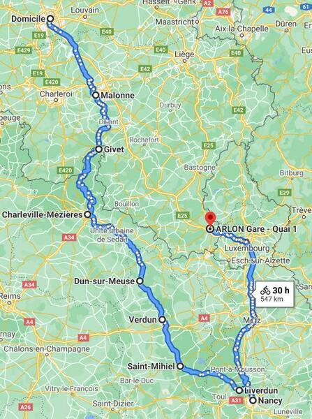

La Meuse à vélo
Parcours
Dimanche 12 juillet: Préparation
Lundi 13 juillet: Bruxelles - Malonne (Namur) (82 km)
Mardi 14 juillet: Malonne - Givet (63 km)
Mercredi 15 juillet: Givet - Charleville (83 km)
Jeudi 16 juillet: Charleville - Dun-sur-Meuse (89 km)
Vendredi 17 juillet: Dun-sur-Meuse - Verdun (40 km)
Samedi 18 juillet: Visite Verdun (30 km)
Dimanche 19 juillet: Verdun - Saint-Mihiel (66 km)
Lundi 20 juillet: Saint-Mihiel - Liverdun (50 km)
Mardi 21 juillet: Liverdun - Villers-les-Nancy (30 km)
Mercredi 22 juillet: Visite de Nancy)
Jeudi 23 juillet: Nancy - Arlon (train + 40 km)
Vendredi 24 juillet: Arlon - Bruxelles (10 km +train)
Les Tops
Verdun
Charleville-Mézières (le bar sur la Meuse et la grand-place)
Nancy
Les campings et le clos-Janon (hôtel Nancy): calme et vert
Le beau tempas après les 4 premiers jours de grisaille
Le concert à Verdun
Les trajets en vélo dans la campagne
Les Flops
Le trajet Bruxelles-Namur
Givet et son camping (mention honorable pour le resto indien)
La friterie de Mallone
Le temps les 4 premiers jours
Les campings et le clos-Janon (hôtel Nancy): calmes et verts
Saint-Mihiel
Les itinéraires Naviki à travers la campagne
L'absence d'arrêts agréables le long du trajet
Trajet
/* https://goo.gl/maps/QydnJ3MTHvujpz1S6 */

{kind=link}